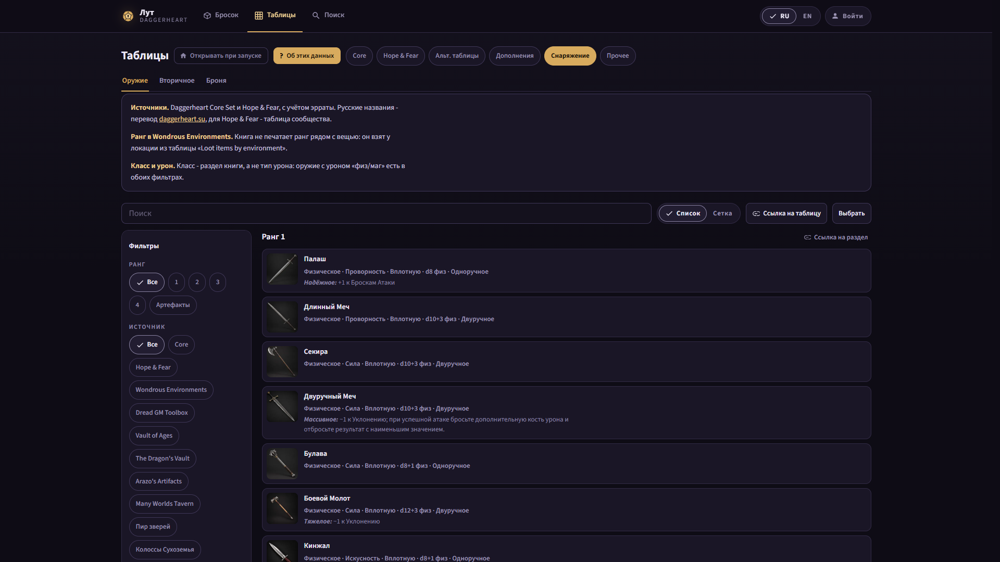
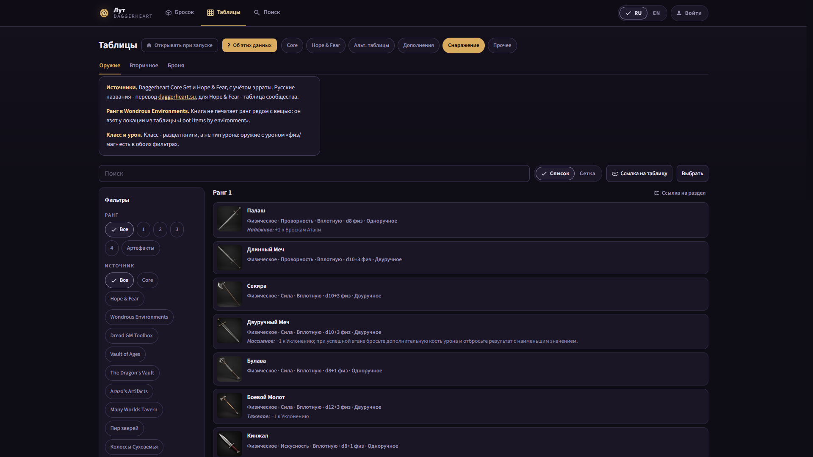
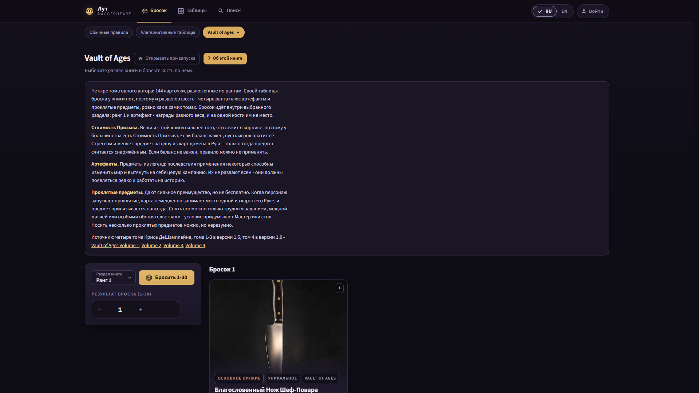
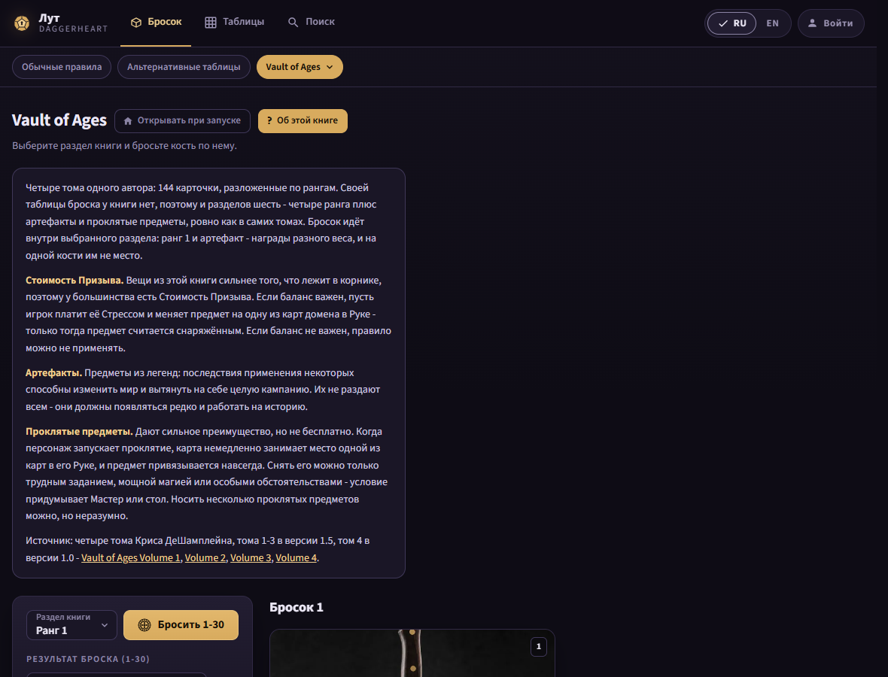
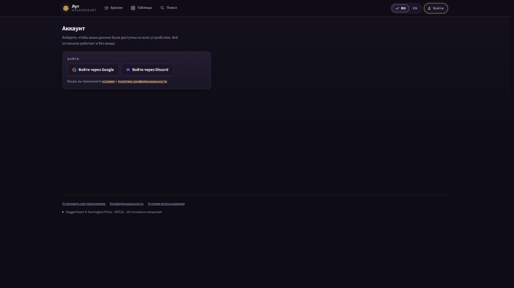
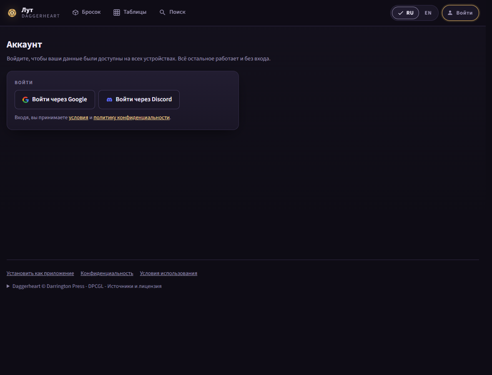
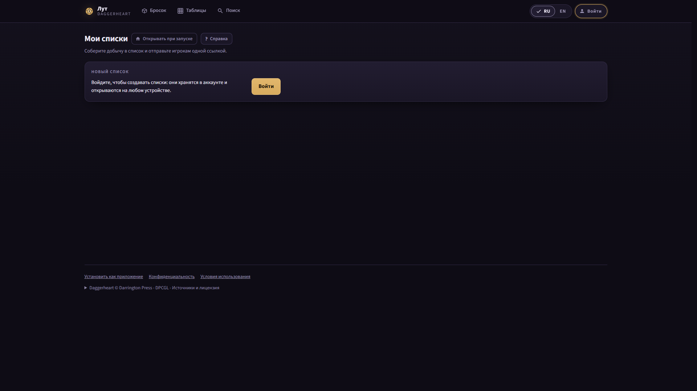
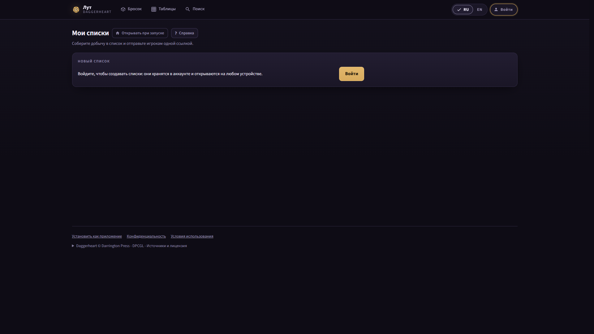

The live site (production) today, and with the proposed Measure Rule injected by
measure.cjs after (after.css). Existing: everything but the text
caps. Proposed: a line class at 120ch (leads, plate causes, sign-in leads, toasts), a
passage class at 70ch (help panels, notes, record text, the footer licence) whose
text-only box is as wide as its text, and rows as batch 9b ships them. Readings:
today-summary.txt, after-summary.txt; the brief is
issues/57/plan-text.md.







